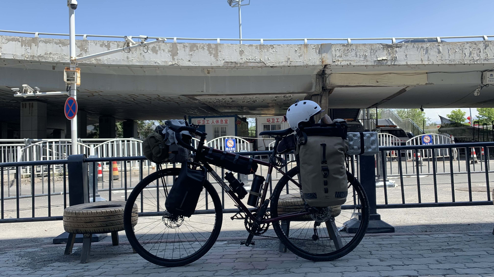
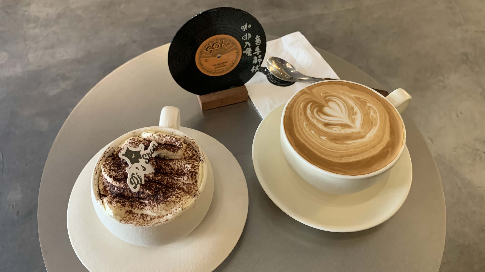
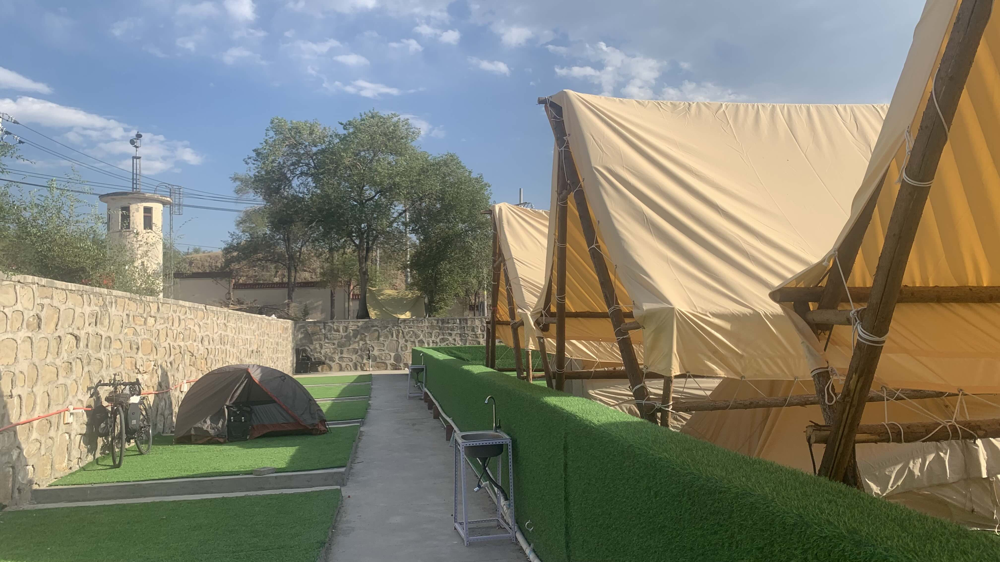
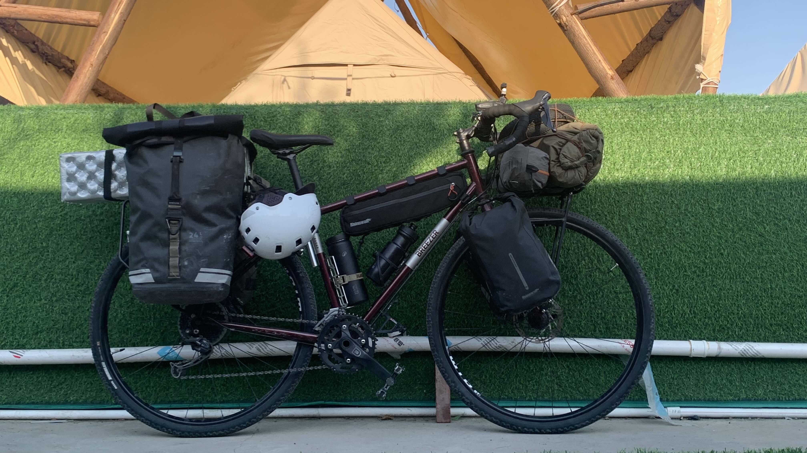

k-Day 138｜嶄新的二十三號

回到美利達幫二十三號添購了兩個前叉包和一個上管包，這次由Trek的技師安裝。二連浩特買的兩個便宜水壺架都變形了，索性丟掉它們，原本裝在前叉的日本水壺架重新回到在車身下方。
裝好後行李重新配重，又花了一些時間。中午決定沿路找一間咖啡廳再試一次。
騎車時搖搖晃晃，包體和前叉之間有一條縫隙，似乎沒鎖緊，服務相當隨便呢。

依然沒有喝到好喝咖啡，這也是沒辦法的事。雖然外觀上看來跟台灣相似，對於五感的深度培養仍需要時間的累積才能在一座城市裡沈澱下來。

下午就不去別的地方了，找了合法露營的營區。草坪是假的，帳篷搭載水泥上，成為像汗蒸土房一樣的存在。卸下兩個前叉包，果然螺絲是歪的，根本沒鎖緊。

重新鎖上後再仔細地安排配重，是一輛嶄新的二十三號。
今日花費： 前叉包 299、上管包 99、水＋飲料 20、住宿 19.9元